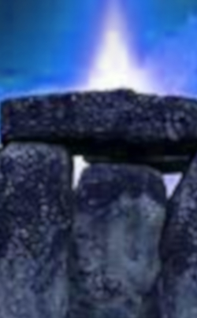

Stonehenge –One of It's Purposes
I have this ability to travel out of the body and circumvent all places.
On this occasion I traveled through dreamscape (leaving the body while asleep).
I saw in the night Stonehenge, complete with all three rings finished.
Walking through the first ring then the second and then the third which was completely enclosed except for on one end was an opening about six feet across. I could see a bright light inside the center.
Part of the second ring hid the opening. I traversed two of the rings and entered the third. There was a man in a robe with hood guiding me.
As I entered the center the light became very apparent. It was a bluish white light pointing skyward from a large stone on the ground. There were about six robed and hooded men standing in front of an upright stone abought waist high. The leader there started talking to me explaining things. I too was hooded and wore a robe like the others. He explained that it was a device when one would enter the light, he would be transported to another place off planet. I stayed there and watched as someone left this world. I understood then. Afterward I left Stonehenge. As I say Stonehenge was completed and it was on a very dark night. I could not tell if this was in another dimension or this one, but I believe it was in the next one above this one.